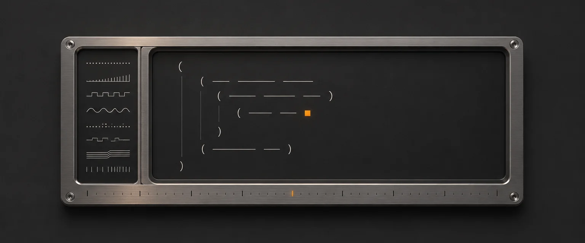

Sviluppo e profilazione
Compila i progetti C e C++ con CMake. Esegui i test e avvia il debug anche in Perl. In Debug dello spazio osservi CPU e memoria del processo e confronti i tempi dei comandi con Hyperfine.
Emacs per macOS
Una distribuzione personale per sviluppare, pianificare e scrivere in Emacs. Ogni progetto ritrova i suoi file, le sue finestre e i suoi strumenti. Menu e guide sono in italiano.
Apri i comandi
Compila i progetti C e C++ con CMake. Esegui i test e avvia il debug anche in Perl. In Debug dello spazio osservi CPU e memoria del processo e confronti i tempi dei comandi con Hyperfine.
L’Agenda di Org GDev ha viste per il giorno, i giorni lavorativi e la settimana. In un progetto Git puoi vedere i commit e le operazioni locali del periodo selezionato e aprire il repository in Hit.
Usa l’AgendaCrea un progetto Articolo per pianificare il manoscritto, raccogliere fonti e conservare versioni da confrontare. La panoramica ti porta dalla stesura alla revisione e all’esportazione con Org.
Scrivi un articoloScegli il profilo dell’interprete e affianca due terminali nella cartella del progetto. Le sessioni continuano quando nascondi il pannello. Puoi anche raggiungere una cartella via SSH.
Lavora via SSHTrova i piani del progetto nel pannello. Componi e verifica i passi accanto al sorgente, poi esegui il piano con conferma. L’esito mostra i passi completati e la causa di un’interruzione.
Apri la guida alle lavorazioniConsulta salvataggi locali e registrazioni Git. Confronta due versioni o una versione con il documento aperto. Puoi riportare una versione nell’editor e decidere quando salvarla.
Consulta la cronologiaFiltra per azione o tasto. Fissa i comandi che vuoi ritrovare in questo browser.
Su macOS servono Homebrew e gli strumenti da riga di comando di Apple (xcode-select --install). Il programma di installazione prepara Emacs e rende disponibile gdev.
Apri il primo progetto con ⇧⌘O. Dopo un aggiornamento, gdev compile --native ricompila il nucleo e i moduli attivi in codice nativo.
git clone https://github.com/gipidevdor/GDev-Emacs.git
cd GDev-Emacs
./bin/gdev-bootstrap-macos